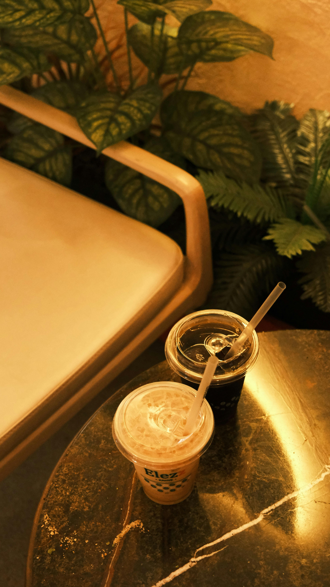
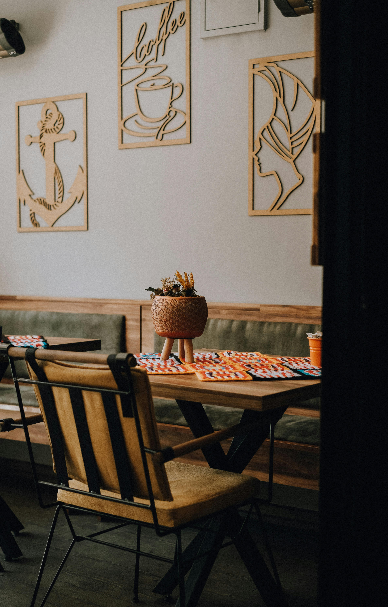
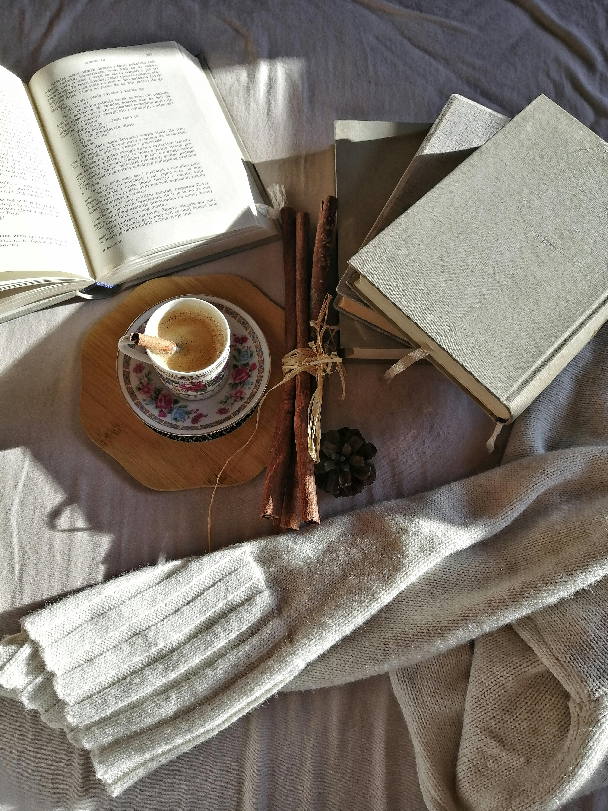
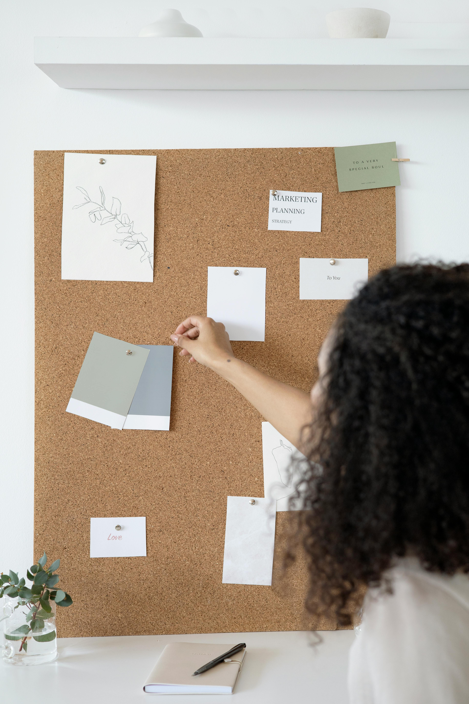

Waarom heb ik voor deze richting gekozen?
Ik koos voor deze richting omdat web development mij echt boeit. In het middelbaar volgde ik al een gelijkaardige opleiding, waardoor mijn interesse alleen maar groeide en ik zeker wist dat ik mij hierin verder wilde verdiepen. Het maken van websites vind ik bijzonder leuk om te doen en het geeft mij veel voldoening om iets functioneels van nul op te bouwen. Daarnaast spreekt ook de grafische wereld mij aan en combineert deze richting techniek en design op een manier die perfect bij mij past.
My aesthetic





Waarom ben ik een goede designer?
Ik ben een goede designer omdat ik oog heb voor detail, structuur en gebruiksvriendelijkheid. Ik denk logisch na over hoe een website is opgebouwd en zorg ervoor dat alles duidelijk en overzichtelijk blijft. Door mijn interesse in web development combineer ik design met functionaliteit, zodat wat ik maak niet alleen mooi oogt, maar ook goed werkt.